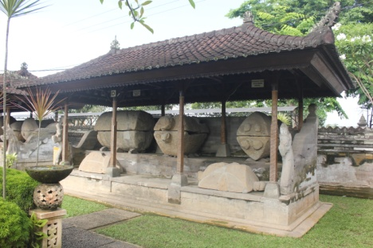

Museum Sarkofagus merupakan salah satu museum khusus di Indonesia yang memiliki peran penting dalam pelestarian dan edukasi warisan budaya prasejarah, khususnya peninggalan sarkofagus di Bali. Berlokasi di Kabupaten Gianyar, Bali, museum ini menjadi ruang publik yang mempertemukan sejarah, penelitian arkeologi, dan edukasi kebudayaan dalam satu kesatuan yang terpadu. Kehadirannya memperkaya khazanah permuseuman nasional sekaligus memperkuat identitas budaya Bali.
Sejarah Museum Sarkofagus tidak dapat dipisahkan dari berdirinya Balai Pelestarian Kebudayaan Wilayah XV. Museum ini sebelumnya dikenal dengan nama Museum Gedong Arca atau Museum Arkeologi, yang gagasannya muncul dari Profesor R. P. Soejono dan Soekarto Atmojo, mantan Kepala Dinas Purbakala Bali. Tujuan awal pendiriannya adalah memperkenalkan benda cagar budaya yang telah dikumpulkan sejak berdirinya Jawatan Purbakala pada tahun 1950. Museum Gedong Arca secara resmi berdiri pada 14 September 1974. Dalam rentang waktu 2016–2018, dilakukan rehabilitasi bangunan dan bale pelindung sarkofagus dengan dukungan dana APBN melalui Direktorat Pelestarian Cagar Budaya dan Permuseuman. Museum ini kemudian diresmikan kembali oleh Direktur Jenderal Kebudayaan pada 20 Maret 2019. Melihat banyaknya tinggalan sarkofagus yang memiliki keunikan dan nilai ilmiah tinggi, museum ini akhirnya diaktivasi dan ditetapkan sebagai Museum Sarkofagus oleh Menteri Kebudayaan pada 27 Februari 2025. Museum Sarkofagus adalah museum khusus yang menitikberatkan pada pelestarian dan pemanfaatan tinggalan arkeologi berupa sarkofagus serta artefak terkait masa prasejarah hingga era Hindu–Buddha di Bali. Sarkofagus sendiri merupakan peti kubur batu yang mencerminkan sistem kepercayaan, teknologi, dan struktur sosial masyarakat masa lampau. Museum ini terdaftar secara resmi dengan Nomor Pendaftaran Nasional Museum (NPNM) 51.04.K.01.0331, dan dimiliki oleh Kementerian Kebudayaan Republik Indonesia. Pengelolaan teknis dan operasionalnya dilaksanakan oleh Balai Pelestarian Kebudayaan Wilayah XV.